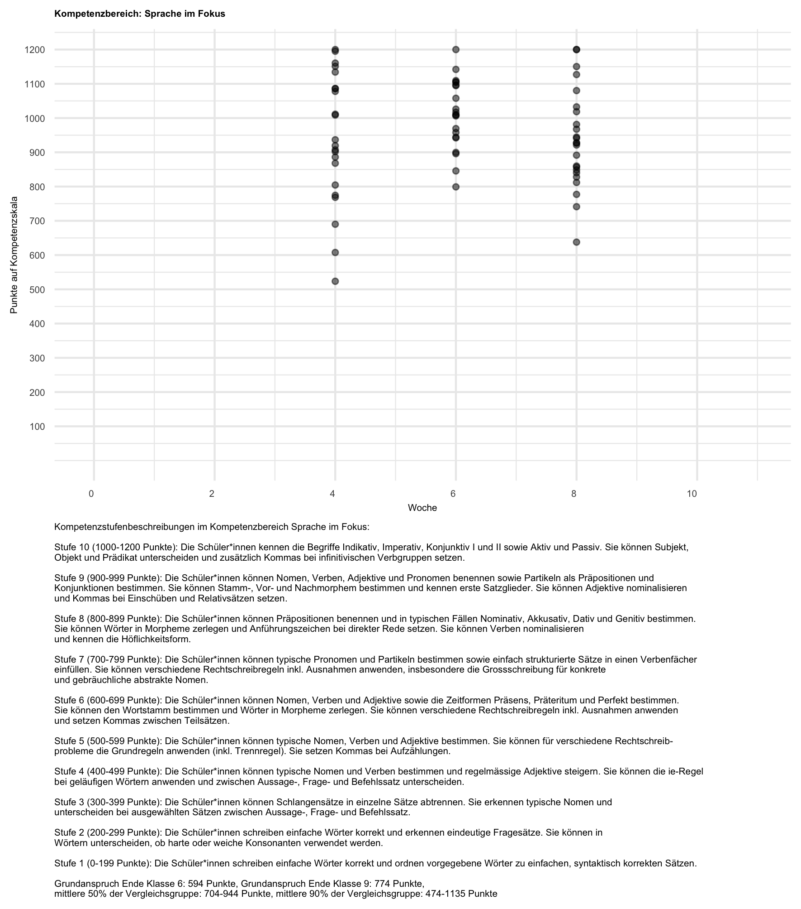
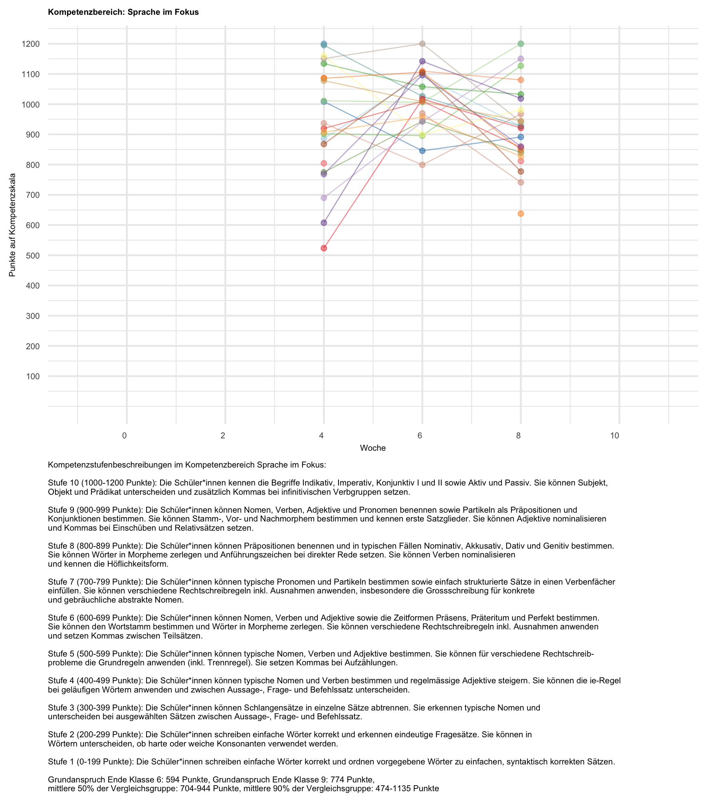
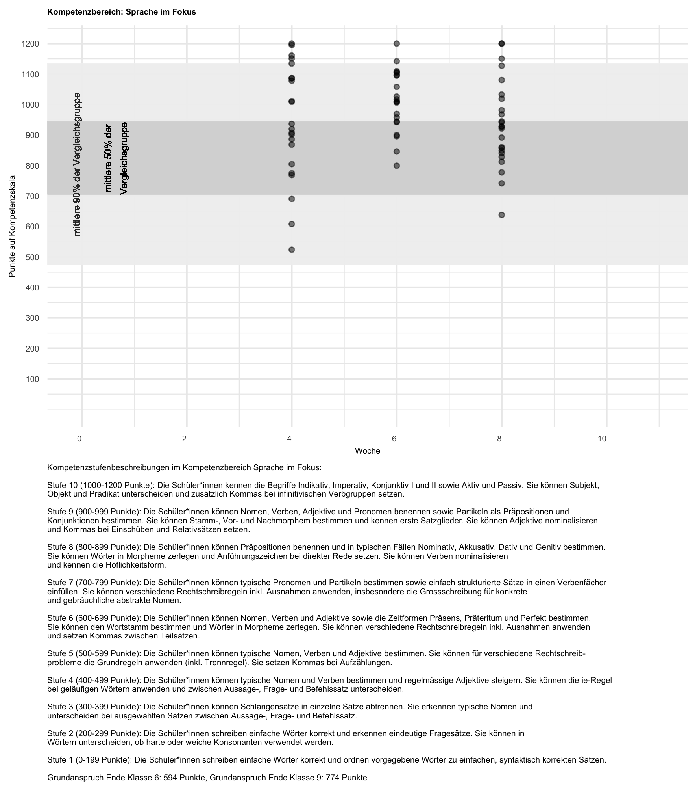
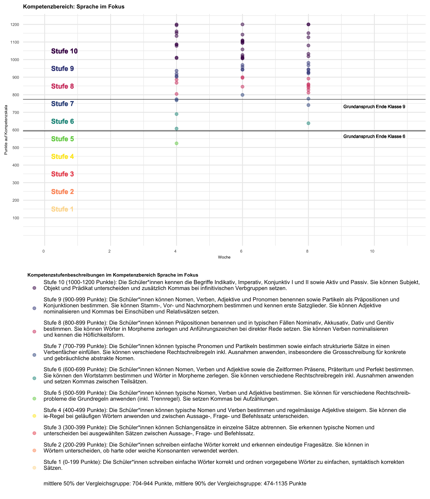
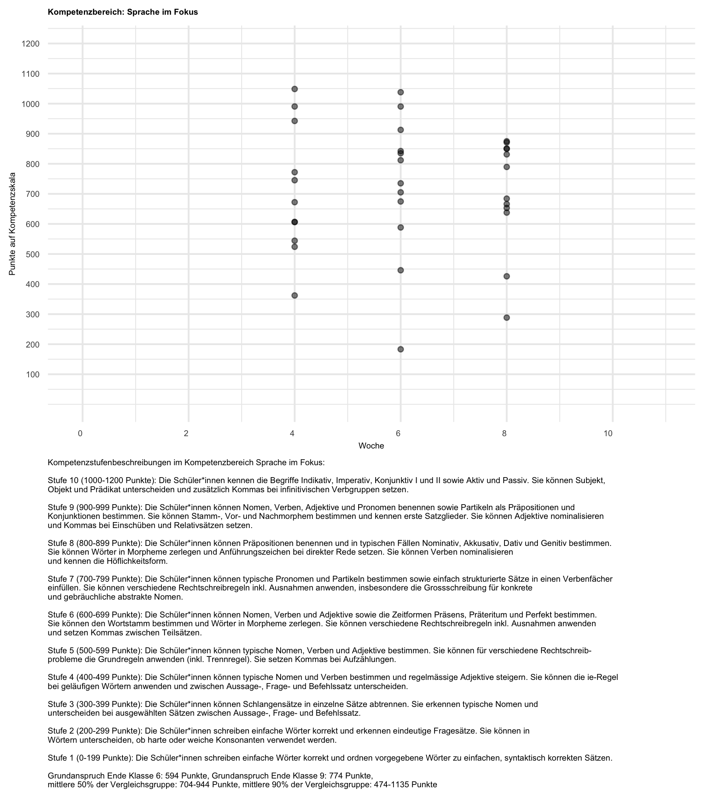
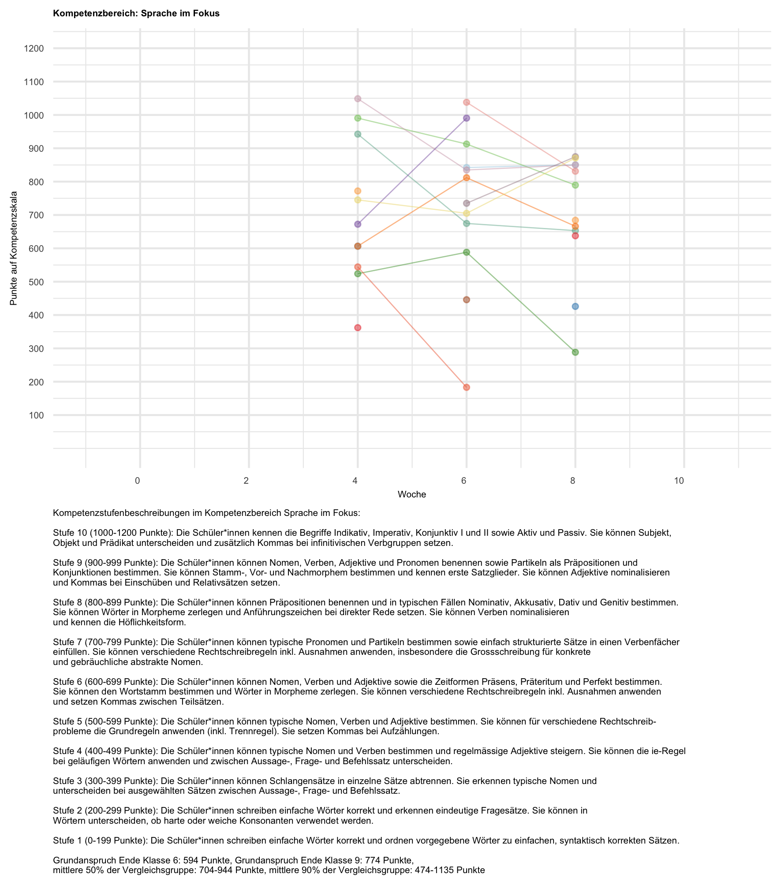
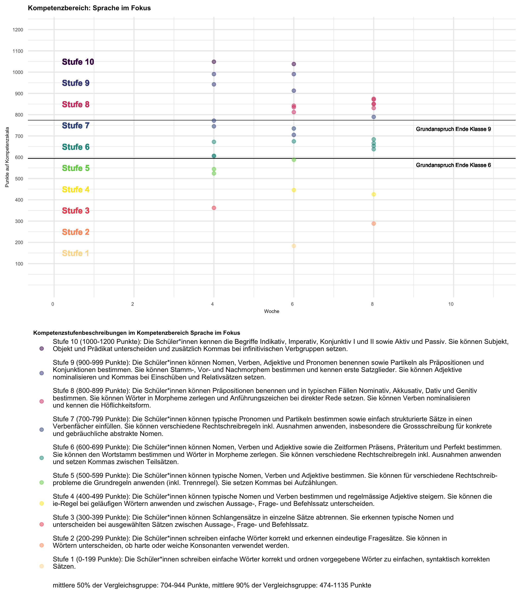

VL Forschungsmethoden
Qualitative Methoden
Samuel Merk & Cora Parrisius
Sommersemster 2025
Inhalte dieses Vorlesungsblocks
Sinnebenen und Charakteristika qualitativer Forschung
Bsp. qualitativer Forschung
Typische Forschungsprozesse
{kind=link}
{kind=link}
Typische Forschungsprozesse
(Typ.) Quant. Forschung
- Erkenntnisinteresse (desk./explo./expla.) ist vor der Datenerhebung festgelegt
- Forschungslogik ist meist entweder induktiv (Exploration) oder deduktiv (Explanation)
- Untersuchungsdesign und Datenanalyse ergeben sich aus Forschungsfrage
(Typ.) Qual. Forschung
- Forschungsfrage kann sich im Prozess ändern
- Forschungslogik ist meist induktiv und abduktiv (Flick, 1995)
- Untersuchungsdesign, Datenanalyse und Forschungsfrage können sich im Lauf des Forschungsprozesses ändern
Aufgaben
Mixed Methods
Meist erfolgen Mixed Methods Studien entweder im sogenannten Vorstudien- oder im Vertiefungsmodell
Vorstudienmodell
Relativ häufig wird eine qualitative Studie vorgeschaltet, welche z. B. der Generierung und Präzisierung von Hypothesen dient (z. B. qualitative Interviewstudie), die dann in der zweiten Teilstudie quantitativ getestet werden (z. B. quantitative Fragebogenstudie). (Döring & Bortz, 2016)
Vertiefungsmodell
Auch die umgekehrte Reihenfolge ist möglich und sinnvoll: Zu einer gut etablierten Theorie wird eine hypothesenprüfende quantitative Studie durchgeführt (z. B. quantitative Dokumentenanalyse). Statistisch nachgewiesene Effekte werden in einer zweiten qualitativen Teilstudie detaillierter beschrieben und an Fallbeispielen illustriert (z. B. qualitative Dokumentenanalyse). (Döring & Bortz, 2016)
Sinnebenen Qualitativer Forschung
Sinnebenen nach Lamnek (2010)
| Subjektiver Sinn | Sozialer Sinn | Objektiver Sinn | |
|---|---|---|---|
| Erkenntnisziel | Erfassung, Beschreibung und Nachvollzug subjektiv-intentionaler Sinngehalte |
Rekonstruktion sozial geteilter Sinngehalte
|
Rekonstruktion eher invarianter Tiefenstrukturen
|
| Basisparadigmen |
|
|
|
| Erhebungsmethoden |
|
|
|
| Auswertungsmethoden | Unterschiedliche Arten offener Interpretation, meist eng am Gegenstand (paraphrasierend) |
|
|
| Beispiele | Rekonstruktion eines naturwissenschaftlichen Fehlkonzepts (z.B. Luft hat keine Masse) | Typologisierung des Umgangs von Lehrer:innen mit Schuler:innentraumata | Rekonstruktion des Umgangs mit Flucht/Migration von Bildungssystemen |
Charakteristika Qualitativer Forschung
Ganzheitlichkeit und Rekonstruktion
“Ontologisch wird die im qualitativen Paradigma empirischer Sozialforschung untersuchte soziale Wirklichkeit auf der Ebene der alltäglichen Lebenswelt der Individuen angesiedelt. Denn menschliches Erleben und Handeln lässt sich im Verständnis des qualitativen Paradigmas nicht durch allgemeine Gesetzmäßigkeiten kausal erklären, sondern nur anhand der jeweils individuellen Weltsichten und Sinngebungen der Beteiligten in ihren jeweiligen Alltagszusammenhängen verstehen und intentional erklären. Durch diese Gegenstandsbestimmung befinden sich nicht-lebensweltliche Makro- und Mikro-Phänomene außerhalb des Fokus der qualitativen Sozialforschung” (Döring & Bortz, 2016).
Theoretische Offenheit
“Erkenntnisgewinn zielt im Paradigma der qualitativen Sozialforschung vor allem auf die Bildung neuer Hypothesen und Theorien ab, die passgenau auf den jeweiligen Untersuchungsgegenstand (d. h. ein lebensweltliches soziales Phänomen) zugeschnitten sind. Deswegen sollen sich die Forschenden eben nicht mit einer bereits im Vorfeld ausgewählten fertigen Theorie und vordefinierten theoretischen Konstrukten mit einem durchstrukturierten Forschungsprozess dem Gegenstand nähern. Stattdessen sollen sie ihr (immer in gewisser Weise vorhandenes und auch notwendiges) Vorverständnis kritisch hinterfragen und ausdrücklich offen sein für Fälle, Situationen und Daten, die ihren Vorannahmen widersprechen und somit über die bisherigen theoretischen Vorstellungen hinaus neue Kenntnisse über den Untersuchungsgegenstand vermitteln” (Döring & Bortz, 2016).
Zirkularität des Forschungsprozesses
“Der qualitative Forschungsprozess wird nicht vorab vollständig durchgeplant, festgelegt und dann linear abgearbeitet, sondern idealerweise flexibel gestaltet: In mehreren Untersuchungszyklen innerhalb einer Studie sollen anhand der Zwischenergebnisse jeweils das Untersuchungsdesign, die Auswahl der Fälle und/oder die Datenerhebungs- und Datenanalyse-Hilfsmittel überarbeitet (Flexibilität des Vorgehens) und dem untersuchten Gegenstand somit schrittweise immer besser angepasst werden (Zirkularität bzw. Spiralförmigkeit der verstehenden Annäherung an den Untersuchungsgegenstand)” (Döring & Bortz, 2016).
Forschung als Kommunikation
“Da der qualitative Ansatz in der Regel auf die Rekonstruktion der Sichtweisen der am untersuchten sozialen Phänomen Beteiligten abzielt, ist die direkte (zuweilen auch medienvermittelte) Kommunikation zwischen Forschenden und Beforschten das zentrale Erkenntnismittel. Damit diese Kommunikation ein möglichst weitreichendes Fremdverstehen ermöglicht, ist eine kooperative Haltung auf beiden Seiten notwendig. Die Beforschten müssen sich vertrauensvoll öffnen und die Forschenden müssen sich persönlich in den Kontakt einbringen und ein dem jeweiligen Gegenüber und dem Forschungsziel angemessenes Arbeitsbündnis aufbauen, dieses reflektieren und dokumentieren” (Döring & Bortz, 2016).
Selbstreflektion der Forschenden
“Das qualitative Paradigma empirischer Sozialforschung vertritt eine subjektivistische Erkenntnistheorie, dergemäß der Erkenntnisprozess immer untrennbar mit der Person der Forschenden ihrer Subjektivität und Perspektivität – verknüpft ist. Ihr persönliches Verhältnis zum jeweiligen Untersuchungsgegenstand und zu den Untersuchungspersonen müssen Forschende deswegen kritisch reflektieren. Die Reflexion der Subjektivität und Perspektivität gilt als zentrale Erkenntnisquelle und muss entsprechend auch dokumentiert werden. Das betrifft nicht zuletzt die Position und Perspektive der Forschenden im Kontext sozialer Hierarchien und gesellschaftlicher Machtverhältnisse” (Döring & Bortz, 2016).
Unterscheidung qualitativer & quantitativer Sozialforschung
Unterscheidung qualitativer & quantitativer Sozialforschung
- Qualitative & quantitative Sozialforschung wurden oft als zwei distinkte Kategorien aufgefasst
- Wissenschaftssoziologisch und -historisch bestanden/bestehen durchaus Konkurrenzverhältnisse
- Quasi alle modernen Lehrbücher betonen jedoch,
- dass sich qualitative & quantitative Sozialforschung zwar in ontologischen, epistemologischen und axiologischen Annahmen unterscheiden,
- jedoch ein fließender Übergang zwischen den Paradigmen vorliegt
- Es macht also Sinn sich qualitative & quantitative Sozialforschung als Pole eines Spektrums hochgradig vorstrukturierter und niedrig vorstrukturierter Forschung vorzustellen
Aufgaben
Beispiele qualitativer Sozialforschung
Bezugsnormen im Kontext Form. Ass.
Abstract. Formatives Assessment bezeichnet die Idee Information über den aktuellen Leistungsstand von Lernenden prospektiv für die Planung adäquater nächster Lernschritte zu nutzen (anstatt zur retrospektiven Bewertung vergangenen Verhaltens). Digitale Werkzeuge, können Lehrkräften dabei Unterstützung bieten indem z.B. automatisiert korrigieren und konstruktvalide Aufgabensets zur Verfügung stellen. Damit die Grundfunktion formativen Assessments aber erhalten bleibt, sollten Lehrkräfte inbesondere die intraindividuelle Entwicklung von Lernenden fokussieren (und nicht etwa den sozialen Vergleich präferieren). Um dies zu erreichen bieten sich theoriegeleitet verschiedene grafische Hervorhebungen. Die Wirksamkeit dieser wurde in einem within-person Experiment untersucht indem N = 223 Proband:innen zunächst eine neutrale Darstellung von Ergebnissen eines formativen Assessments sehen und in einem offenen Textfeld ihre subjektiv wahrgenommene zentrale Information dieser Daten äußern sollen. Danach sehen die Proband:innen die Daten einer anderen Klasse in einer Darstellung in der eine Bezugsnorm grafisch hervorgehoben ist und sollen wieder die zentrale Information der Daten in ein offenes Textfeld schreiben. Eine induktiv-deduktive Kodierung der Antworten zeigte zu Messzeitpunkt 1 eine klar dominante Prävalenz der kriterialen Bezugsnorm (142 Nennungen). Weiterhin wurde ein signifikanter Einfluss der Darstellungsform auf die Häufigkeit der gewählten Bezugsnorm in den offenen Antworten gefunden (p < .05).
Kategorisieren Sie die Studie als explanativ/explorativ/deskriptiv, querschnittlich/längsschnittlich, experimentell/quasi-experimentell/nicht-experimentell und bewerten Sie die interne, externe und Konstruktvalidität
Materialien
| Klasse | Neutrale Abbildung | Hervorhebung ind. Bezugsnorm | Hervorhebung soz. Bezugsnorm | Hervorhebung soz. Bezugsnorm |
|---|---|---|---|---|
| 1 |  |  |  |  |
| 2 |  |  |  |
{kind=link}
{kind=link}
{kind=link}
{kind=link}
{kind=link}
{kind=link}
{kind=link}
{kind=link}
Kodiermanual
Für die Überführung der Freitextantworten in Kodierungen der angewendeten Bezugsnorm wurde eine sog. qualitative Inhaltsanalyse nach Mayring (2019) durchgeführt.
Ergebnisse
Aufgaben
Die Arbeitslosen von Marienthal
“Ziel der vorliegenden Untersuchung war mit den Mitteln moderner Erhebungsmethode ein Bild von der psychologischen Situation eines Arbeitslosen Ortes zu geben. Es waren uns von Anfang an zwei Aufgaben wichtig. Die inhaltliche: zum Problem der Arbeitslosigkeit Material beizutragen - und die methodische: zu versuchen, eine sozialpsychologischen Tatbestand umfassend objektiv darzustellen.” (Jahoda, Lazarsfeld, & Zeisel, 2021)
{kind=link}
Erhebungsdesign
| Quantitative Daten | Qualitative Daten | |
|---|---|---|
| Sekundäranalyse | Bevölkerungsstatistik Wahlstatistik Beschwerden bei Behörden |
|
| Standardisierte Daten |
Haushaltsinventarlisten Zeitverwendungsbögen |
|
| Dokumenten- analyse |
Bibliotheksbesuche Zeitungsabonnements Vereinsmitglieder |
Tagebücher Schulaufsätze Preisausschreiben |
| (Teilnehmende) Beobachtung |
Messung der Gehgeschwindigkeit | Kleidersammlung Ärztesprechstunden Erziehungsberatung Turn- und Schnittzeichenkurse |
| Experten- interviews |
Lehrer, Pfarrer, Bürgermeister, Ärzte, Geschäftsleute, Vereinsfunktionäre |
|
| Narrative Interviews |
Arbeitslose |
Ausgewählte zentrale Daten
Quantitative Daten aus Dokumentenanalyse
- Anzahl der entliehenen Bücher sinkt von 1929 bis 1931 um knapp die Hälfte
- Zahl der Mitglieder im Turn- bzw. Gesangsverein sinkt von 1927 bis 1931 um mehr als die Hälfte
- Zahl der Abonnenten der „Arbeiterzeitung” sinkt von 1927 bis 1930 um 60 Prozent gesunken, der Mitglieder der Sozialdemokratischen Partei um ein Drittel
Ausgewählte zentrale Daten
Interviewtranskripte
“Immer wieder verschwinden Katzen. Die Katze von Herrn H. ist erst vor wenigen Tagen verschwunden. Katzenfleisch ist sehr gut. Auch Hunde werden gegessen. […] Erst vor wenigen Tagen bekam ein Mann von einem Bauern einen Hund geschenkt, unter der Bedingung, daß er ihn schmerzlos erschlägt.”
Gehgeschwindigkeit und Häufigkeit des Stehenbleibens auf Dorfstraße
| Männer | Frauen | |
|---|---|---|
| 3x und mehr | 39 | 3 |
| 2x | 7 | 2 |
| 1x | 16 | 15 |
| 0x | 6 | 12 |
Zentrales Ergebnis: Typologie
Die Resignierten (48%)
“Das gleichmütig erwartungslose Dahinleben, die Einstellung: man kann ja doch nichts gegen die Arbeitslosigkeit machen, dabei eine relativ ruhige Stimmung, sogar immer wieder auftauchende heitere Augenblicksfreude, verbunden mit dem Verzicht auf eine Zukunft, die nicht einmal mehr in der Phantasie als Plan eine Rolle spielt […]” (S. 70)
Die Ungebrochenen (16%) “Ihre Haushaltungsführung ist ebenso geordnet wie die der Resignierten, aber ihre Bedürfnisse sind weniger reduziert, ihr Horizont ist weiter, ihre Energie größer.” (S. 71)
Die Verzweifelten (11%) “Diese Menschen sind völlig verzweifelt, und nach dieser Grundstimmung erhielt die Verhaltensgruppe ihren Namen. Wie die Ungebrochenen und Resignierten halten auch sie in ihrem Haushalt noch Ordnung, pflegen auch sie ihre Kinder.” (S. 71)
Die Apathischen (2%) “Mit apathischer Indolenz läßt man den Dingen ihren Lauf, ohne den Versuch zu machen, etwas vor dem Verfall zu retten. […] Das Hauptkriterium für diese Haltung ist das energielose, tatenlose Zusehen. Wohnung und Kinder sind unsauber und ungepflegt, die Stimmung ist nicht verzweifelt, sondern indolent.” (S. 71f.)
Aufgaben
Literatur

Samuel Merk | Pädagogische Hochschule Karlsruhe